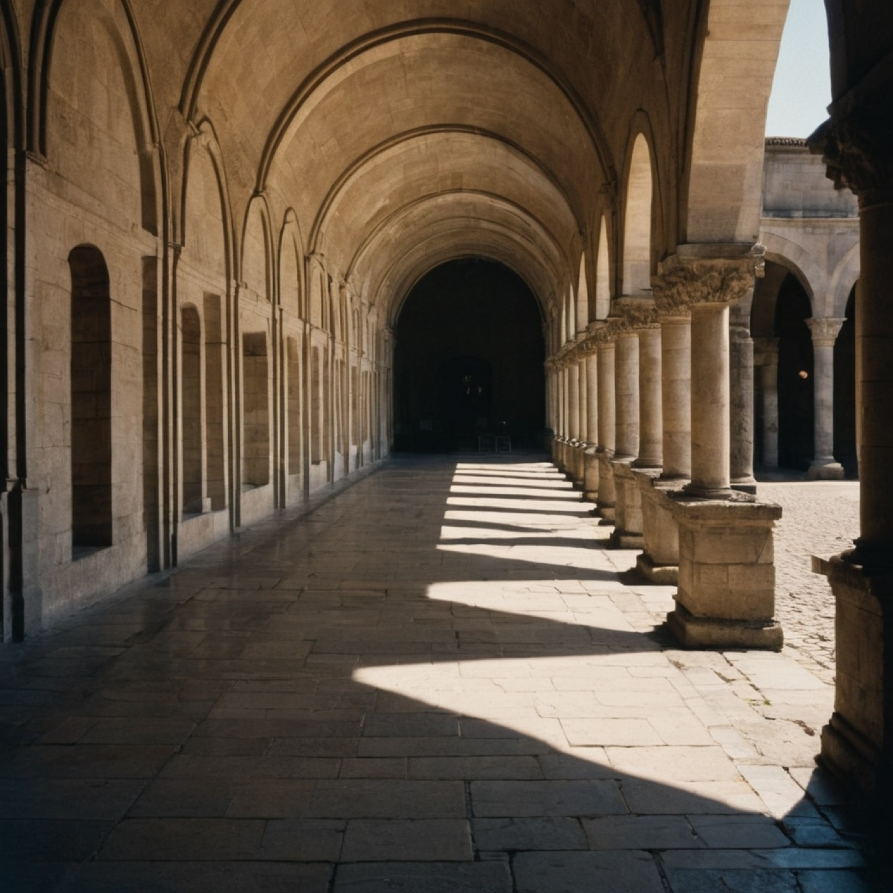

rung 01
1 : 1
The arcade Arcus lapideus
- Material
- tens of tonnes of dressed stone, engaged piers, semicircular arches
- What it carries
- weather · sound · the state's permission to pass
- Era
- Roman to Renaissance
The heaviest ancestor. Every rung below is a reduction of this one — arches kept, mass dropped, at ever finer ratios.